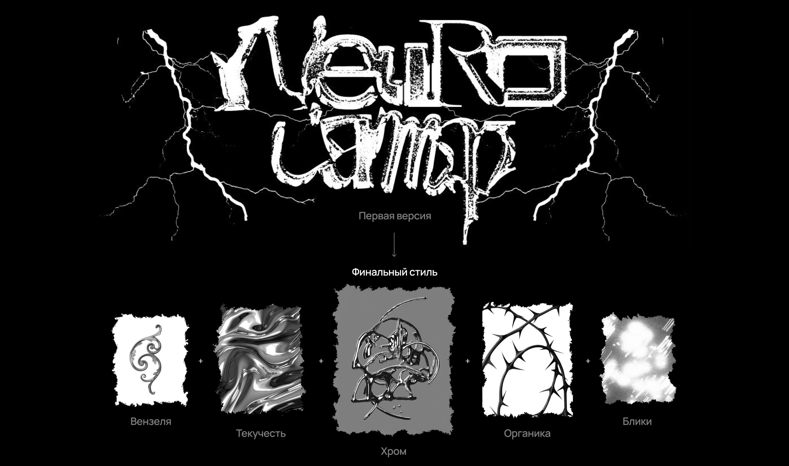
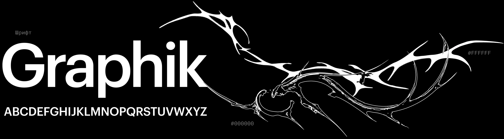
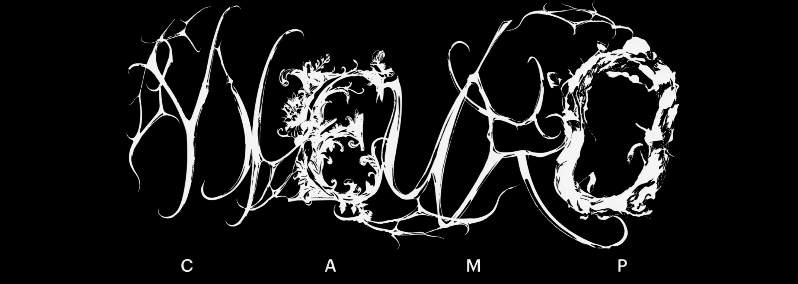
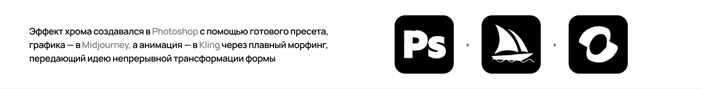
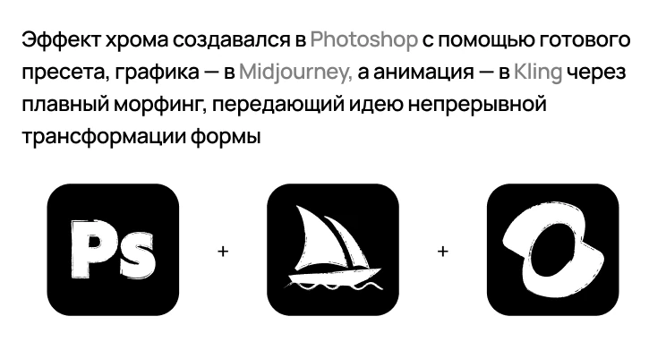
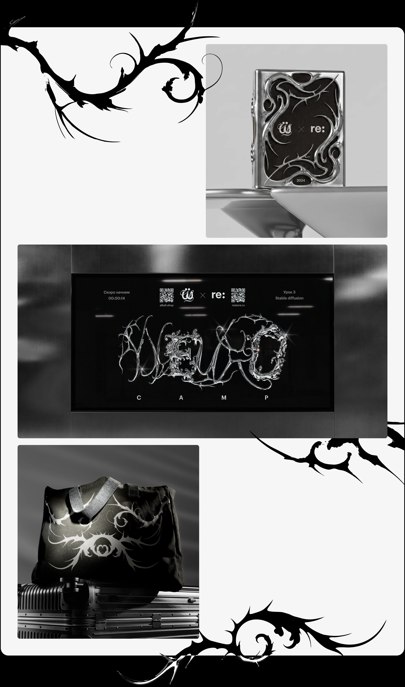
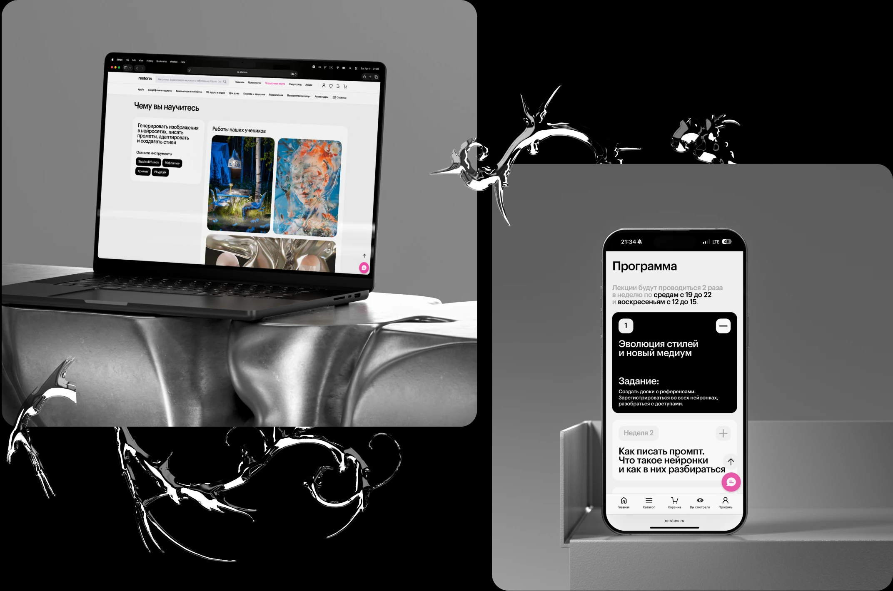
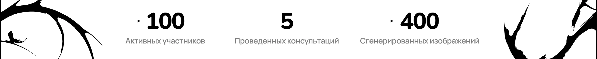
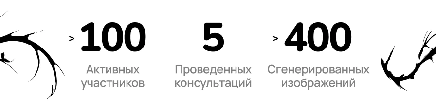

Описание
Айдентика для Neuro Camp —
интенсивного курса по нейросетям
Контекст и задача
Neuro Camp — камерный интенсив по работе с нейросетями, организованный в коллаборации restore: и студии Щелочь
restore: (re-store.ru) — крупнейший ритейлер электроники премиум-сегмента в России, который также занимается развитием цифрового искусства. Щёлочь (alkali.shop) — сообщество, школа и студия современного визуального дизайна
Задача проекта — разработать айдентику и сайт для регистрации на курс, где участники смогут освоить промт-инжиниринг, научиться работать с инструментами для генерации изображений, и подготовить работу для участия в ежегодном конкурсе restore:digital art для номинации «Искусство нейросети»
Концепция
Визуальная метафора — синтез элементов органики и индустриальной материи: ветви, жидкий металл, пластика вензелей, блики. Основным источником вдохновения стал хром — это и отсылка к цифровым экспериментам, и референс к боту «Хромик» от Щелочи, который дает доступ ко многим нейросетям
В результате стиль органично смотрится в контексте цифрового и нейросетевого творчества

Графические элементы
Основная типографика в виде гротеска заимствована из брендбука restore:, что позволило стилю остаться внутри общей визуальной системы бренда

Леттеринг же стал более живым и пластичным слоем айдентики. Он привнес в стиль некоторую непредсказуемость — качество, которое напрямую ассоциируется с нейросетями; дал ощущение движения, спонтанности и импульсивности
Графика в целом продолжает эту же логику. За счёт этого визуальный язык не выглядит статичным: в нём всегда есть ощущение трансформации и некоторой неустойчивости, что было важно для проекта, связанного с генеративной эстетикой

Монохромное решение помогло лучше раскрыть саму графику: в ней сильнее считываются силуэт и пластика. Одновременно с таким цветовым решением хром стал важным акцентом в стиле



Сайт
На промо-сайте мы разместили основную информацию о курсе в понятной структуре с акцентом на деталях. Страница решала несколько задач: информировала, вовлекала и конвертировала зашедших пользователей в участников
Отдельным блоком внизу мы рассказали о возможности участия в конкурсе restore:digital art по итогам интенсива. Это давало шанс каждому вне зависимости от уровня опыта бесплатно обучиться новому и сразу применить полученные навыки в конкретной задаче

Результаты
За несколько недель мы объединили более ста людей и собрали коллекцию из их уникальных работ. Обучающие лекции и презентации оказались востребованы как для представителей креативных профессий, так и для тех, кто только начал делать первые шаги в этой среде
Несмотря на то, что на тот момент генеративные технологии были развиты не так, как сегодня, участникам удалось получить результаты на уровне актуальных стандартов, используя максимум возможностей действующих инструментов
Дополнительно проект способствовал росту узнаваемости обоих брендов


Дизайн команда
Арт-директор
Егор Гализдра
Дизайн айдентики
Арина Серова
Светлана Питимирова
Веб-дизайнеры
Николай Маковский
Софья Загуменкова